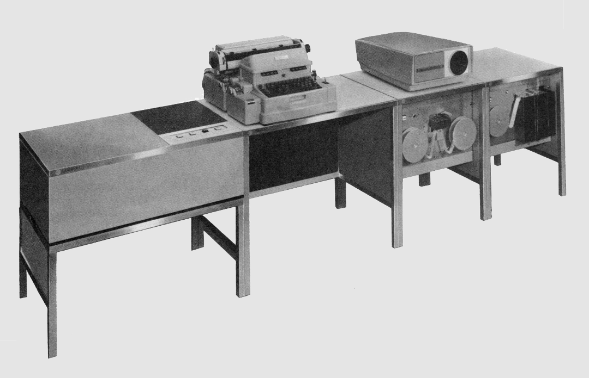

This site hosts the current version of the retro-lgp21 emulator, an implementation of the General Precision LGP-21 computer system that runs in a web browser.

Like this? Check out these emulators:
Burroughs B5500 •
Burroughs 220 •
ElectroData 205 •
Bendix G-15 •
IBM 1620